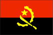

{kind=link}


![[Country map of Angola]](../maps/ao-map.jpg)
| Angola |  |
|
| | |
| Introduction |
Background: Civil war has been the norm in Angola since independence from Portugal in 1975. A 1994 peace accord between the government and the National Union for the Total Independence of Angola (UNITA) provided for the integration of former UNITA insurgents into the government and armed forces. A national unity government was installed in April of 1997, but serious fighting resumed in late 1998, rendering hundreds of thousands of people homeless. Up to 1.5 million lives may have been lost in fighting over the past quarter century.
| Geography |
Location: Southern Africa, bordering the South Atlantic Ocean, between Namibia and Democratic Republic of the Congo
Geographic coordinates: 12 30 S, 18 30 E
Map references: Africa
Area:
total:
1,246,700 sq km
land:
1,246,700 sq km
water:
0 sq km
Area - comparative: slightly less than twice the size of Texas
Land boundaries:
total:
5,198 km
border countries:
Democratic Republic of the Congo 2,511 km (of which 220 km is the boundary of discontiguous Cabinda Province), Republic of the Congo 201 km, Namibia 1,376 km, Zambia 1,110 km
Coastline: 1,600 km
Maritime claims:
exclusive economic zone:
200 nm
territorial sea:
12 nm
Climate: semiarid in south and along coast to Luanda; north has cool, dry season (May to October) and hot, rainy season (November to April)
Terrain: narrow coastal plain rises abruptly to vast interior plateau
Elevation extremes:
lowest point:
Atlantic Ocean 0 m
highest point:
Morro de Moco 2,620 m
Natural resources: petroleum, diamonds, iron ore, phosphates, copper, feldspar, gold, bauxite, uranium
Land use:
arable land:
2%
permanent crops:
0%
permanent pastures:
23%
forests and woodland:
43%
other:
32% (1993 est.)
Irrigated land: 750 sq km (1993 est.)
Natural hazards: locally heavy rainfall causes periodic flooding on the plateau
Environment - current issues: overuse of pastures and subsequent soil erosion attributable to population pressures; desertification; deforestation of tropical rain forest, in response to both international demand for tropical timber and to domestic use as fuel, resulting in loss of biodiversity; soil erosion contributing to water pollution and siltation of rivers and dams; inadequate supplies of potable water
Environment - international agreements:
party to:
Biodiversity, Desertification, Law of the Sea
signed, but not ratified:
Climate Change
Geography - note: Cabinda is separated from rest of country by the Democratic Republic of the Congo
| People |
Population: 10,145,267 (July 2000 est.)
Age structure:
0-14 years:
43% (male 2,215,706; female 2,172,106)
15-64 years:
54% (male 2,792,313; female 2,692,790)
65 years and over:
3% (male 124,404; female 147,948) (2000 est.)
Population growth rate: 2.15% (2000 est.)
Birth rate: 46.89 births/1,000 population (2000 est.)
Death rate: 25.01 deaths/1,000 population (2000 est.)
Net migration rate: -0.34 migrant(s)/1,000 population (2000 est.)
Sex ratio:
at birth:
1.05 male(s)/female
under 15 years:
1.02 male(s)/female
15-64 years:
1.04 male(s)/female
65 years and over:
0.84 male(s)/female
total population:
1.02 male(s)/female (2000 est.)
Infant mortality rate: 195.78 deaths/1,000 live births (2000 est.)
Life expectancy at birth:
total population:
38.31 years
male:
37.11 years
female:
39.56 years (2000 est.)
Total fertility rate: 6.52 children born/woman (2000 est.)
Nationality:
noun:
Angolan(s)
adjective:
Angolan
Ethnic groups: Ovimbundu 37%, Kimbundu 25%, Bakongo 13%, mestico (mixed European and Native African) 2%, European 1%, other 22%
Religions: indigenous beliefs 47%, Roman Catholic 38%, Protestant 15% (1998 est.)
Languages: Portuguese (official), Bantu and other African languages
Literacy:
definition:
age 15 and over can read and write
total population:
42%
male:
56%
female:
28% (1998 est.)
| Government |
Country name:
conventional long form:
Republic of Angola
conventional short form:
Angola
local long form:
Republica de Angola
local short form:
Angola
former:
People's Republic of Angola
Data code: AO
Government type: transitional government, nominally a multiparty democracy with a strong presidential system
Capital: Luanda
Administrative divisions: 18 provinces (provincias, singular - provincia); Bengo, Benguela, Bie, Cabinda, Cuando Cubango, Cuanza Norte, Cuanza Sul, Cunene, Huambo, Huila, Luanda, Lunda Norte, Lunda Sul, Malanje, Moxico, Namibe, Uige, Zaire
Independence: 11 November 1975 (from Portugal)
National holiday: Independence Day, 11 November (1975)
Constitution: 11 November 1975; revised 7 January 1978, 11 August 1980, 6 March 1991, and 26 August 1992
Legal system: based on Portuguese civil law system and customary law; recently modified to accommodate political pluralism and increased use of free markets
Suffrage: 18 years of age; universal
Executive branch:
chief of state:
President Jose Eduardo DOS SANTOS (since 21 September 1979); note - the president is both chief of state and head of government
head of government:
President Jose Eduardo DOS SANTOS (since January 1999); note - the president is both chief of state and head of government
cabinet:
Council of Ministers appointed by the president
elections:
President DOS SANTOS originally elected (in 1979) without opposition under a one-party system and stood for reelection in Angola's first multiparty elections 28-29 September 1992, the last elections to be held (next to be held NA)
election results:
DOS SANTOS received 49.6% of the total vote, making a run-off election necessary between him and second-place finisher Jonas SAVIMBI (40.1% of the vote); the run-off was not held and SAVIMBI's National Union for the Total Independence of Angola (UNITA) repudiated the results of the first election; the civil war resumed
Legislative branch:
unicameral National Assembly or Assembleia Nacional (220 seats; members elected by proportional vote to serve four-year terms)
elections:
last held 29-30 September 1992 (next to be held NA)
election results:
percent of vote by party - MPLA 54%, UNITA 34%, others 12%; seats by party - MPLA 129, UNITA 70, PRS 6, FNLA 5, PLD 3, others 7
Judicial branch: Supreme Court or Tribunal da Relacao, judges of the Supreme Court are appointed by the president
Political parties and leaders:
Liberal Democratic Party or PLD [Analia de Victoria PEREIRA]; National Front for the Liberation of Angola or FNLA [disputed leadership: Lucas NGONDA, Holden ROBERTO]; National Union for the Total Independence of Angola or UNITA [Jonas SAVIMBI], largest opposition party engaged in years of armed resistance before joining the current unity government in April 1997; Popular Movement for the Liberation of Angola or MPLA [Jose Eduardo DOS SANTOS] ruling party in power since 1975; Social Renewal Party or PRS [disputed leadership: Eduardo KUANGANA, Antonio MUACHICUNGO]
note:
about a dozen minor parties participated in the 1992 elections but won few seats and have little influence in the National Assembly
Political pressure groups and leaders:
Front for the Liberation of the Enclave of Cabinda or FLEC [N'zita Henriques TIAGO; Antonio Bento BEMBE]
note:
FLEC is waging a small-scale, highly factionalized, armed struggle for the independence of Cabinda Province
International organization participation: ACP, AfDB, CCC, CEEAC, ECA, FAO, G-77, IBRD, ICAO, ICRM, IDA, IFAD, IFC, IFRCS, ILO, IMF, IMO, Intelsat, Interpol, IOC, IOM, ITU, NAM, OAS (observer), OAU, SADC, UN, UNCTAD, UNESCO, UNIDO, UPU, WCL, WFTU, WHO, WIPO, WMO, WToO, WTrO
Diplomatic representation in the US:
chief of mission:
Ambassador Antonio dos Santos FRANCA "N'dalu"
chancery:
1615 M Street, NW, Suite 900, Washington, DC 20036
telephone:
[1] (202) 785-1156
FAX:
[1] (202) 785-1258
consulate(s) general:
New York
Diplomatic representation from the US:
chief of mission:
Ambassador Joseph G. SULLIVAN
embassy:
number 32 Rua Houari Boumedienne, Miramar, Luanda
mailing address:
international mail: Caixa Postal 6484, Luanda; pouch: American Embassy Luanda, Department of State, Washington, DC 20521-2550
telephone:
[244] (2) 345-481, 346-418
FAX:
[244] (2) 346-924
Flag description: two equal horizontal bands of red (top) and black with a centered yellow emblem consisting of a five-pointed star within half a cogwheel crossed by a machete (in the style of a hammer and sickle)
| Economy |
Economy - overview: Angola is an economy in disarray because of a quarter century of nearly continuous warfare. Despite its abundant natural resources, output per capita is among the world's lowest. Subsistence agriculture provides the main livelihood for 85% of the population. Oil production and the supporting activities are vital to the economy, contributing about 45% to GDP and 90% of exports. Notwithstanding the signing of a peace accord in November 1994, violence continues, millions of land mines remain, and many farmers are reluctant to return to their fields. As a result, much of the country's food must still be imported. To take advantage of its rich resources - gold, diamonds, extensive forests, Atlantic fisheries, and large oil deposits - Angola will need to implement the peace agreement and reform government policies. Despite the increase in the pace of civil warfare in late 1998, the economy grew by an estimated 4% in 1999. The government introduced new currency denominations in 1999, including a 1 and 5 kwanza note. Expanded oil production brightens prospects for 2000, but internal strife discourages investment outside of the petroleum sector.
GDP: purchasing power parity - $11.6 billion (1999 est.)
GDP - real growth rate: 4% (1999 est.)
GDP - per capita: purchasing power parity - $1,030 (1999 est.)
GDP - composition by sector:
agriculture:
13%
industry:
53%
services:
34% (1998 est.)
Population below poverty line: NA%
Household income or consumption by percentage share:
lowest 10%:
NA%
highest 10%:
NA%
Inflation rate (consumer prices): 270% (1999 est.)
Labor force: 5 million (1997 est.)
Labor force - by occupation: agriculture 85%, industry and services 15% (1997 est.)
Unemployment rate: extensive unemployment and underemployment affecting more than half the population (1999 est.)
Budget:
revenues:
$928 million
expenditures:
$2.5 billion, including capital expenditures of $963 million (1992 est.)
Industries: petroleum; diamonds, iron ore, phosphates, feldspar, bauxite, uranium, and gold; cement; basic metal products; fish processing; food processing; brewing; tobacco products; sugar; textiles
Industrial production growth rate: NA%
Electricity - production: 1.886 billion kWh (1998)
Electricity - production by source:
fossil fuel:
24.97%
hydro:
75.03%
nuclear:
0%
other:
0% (1998)
Electricity - consumption: 1.754 billion kWh (1998)
Electricity - exports: 0 kWh (1998)
Electricity - imports: 0 kWh (1998)
Agriculture - products: bananas, sugarcane, coffee, sisal, corn, cotton, manioc (tapioca), tobacco, vegetables, plantains; livestock; forest products; fish
Exports: $5 billion (f.o.b., 1999 est.)
Exports - commodities: crude oil 90%, diamonds, refined petroleum products, gas, coffee, sisal, fish and fish products, timber, cotton
Exports - partners: US 63%, Benelux 9%, China, Chile, France (1998)
Imports: $3 billion (f.o.b., 1999 est.)
Imports - commodities: machinery and electrical equipment, vehicles and spare parts; medicines, food, textiles, military goods
Imports - partners: Portugal 20%, US 17%, South Africa 10%, Spain, Brazil, France (1998)
Debt - external: $10.5 billion (1999 est.)
Economic aid - recipient: $493.1 million (1995)
Currency: 1 kwanza (NKz) = 100 lwei
Exchange rates: kwanza (NKz) per US$1 - 577,304 (January 2000), 2,790,706 (1999), 392,824 (1998), 229,040 (1997), 128,029 (1996), 2,750 (1995); note - beginning in June 1998, the official rate is determined weekly in accordance with a crawling peg scheme
Fiscal year: calendar year
| Communications |
Telephones - main lines in use: 60,000 (1995)
Telephones - mobile cellular: 1,994 (1995)
Telephone system:
telephone service limited mostly to government and business use; HF radiotelephone used extensively for military links
domestic:
limited system of wire, microwave radio relay, and tropospheric scatter
international:
satellite earth stations - 2 Intelsat (Atlantic Ocean)
Radio broadcast stations: AM 34, FM 7, shortwave 9 (1999)
Radios: 630,000 (1997)
Television broadcast stations: 7 (1999)
Televisions: 150,000 (1997)
Internet Service Providers (ISPs): 2 (1999)
| Transportation |
Railways:
total:
2,952 km (inland, much of the track is unusable because of land mines still in place from the civil war)
narrow gauge:
2,798 km 1.067-m gauge; 154 km 0.600-m gauge (1997)
Highways:
total:
76,626 km
paved:
19,156 km
unpaved:
57,470 km (1997 est.)
Waterways: 1,295 km navigable
Pipelines: crude oil 179 km
Ports and harbors: Ambriz, Cabinda, Lobito, Luanda, Malongo, Namibe, Porto Amboim, Soyo
Merchant marine:
total:
9 ships (1,000 GRT or over) totaling 39,305 GRT/63,067 DWT
ships by type:
cargo 8, petroleum tanker 1 (1999 est.)
Airports: 249 (1999 est.)
Airports - with paved runways:
total:
32
over 3,047 m:
4
2,438 to 3,047 m:
8
1,524 to 2,437 m:
12
914 to 1,523 m:
7
under 914 m:
1 (1999 est.)
Airports - with unpaved runways:
total:
217
over 3,047 m:
2
2,438 to 3,047 m:
5
1,524 to 2,437 m:
31
914 to 1,523 m:
96
under 914 m:
83 (1999 est.)
| Military |
Military branches: Army, Navy, Air and Air Defense Forces, National Police Force
Military manpower - military age: 18 years of age
Military manpower - availability:
males age 15-49:
2,429,842 (2000 est.)
Military manpower - fit for military service:
males age 15-49:
1,221,277 (2000 est.)
Military manpower - reaching military age annually:
males:
101,434 (2000 est.)
Military expenditures - dollar figure: $1.2 billion (FY97/98)
Military expenditures - percent of GDP: 25% (FY97/98)
| Transnational Issues |
Disputes - international: none
Illicit drugs: increasingly used as a transshipment point for cocaine and heroin destined for Western Europe and other African states